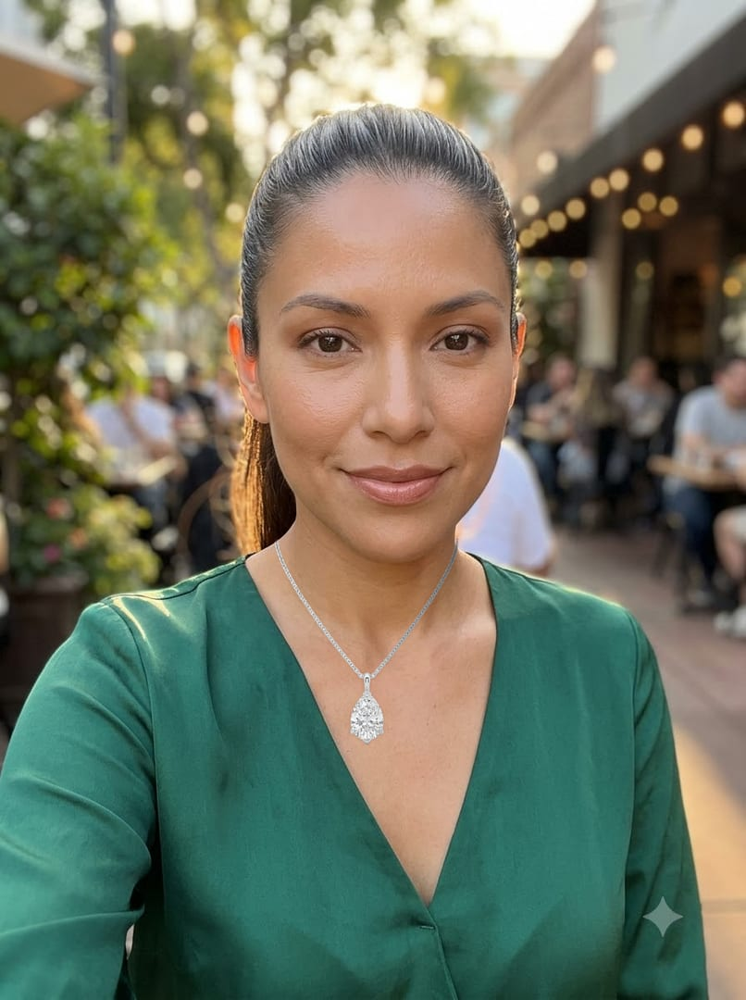
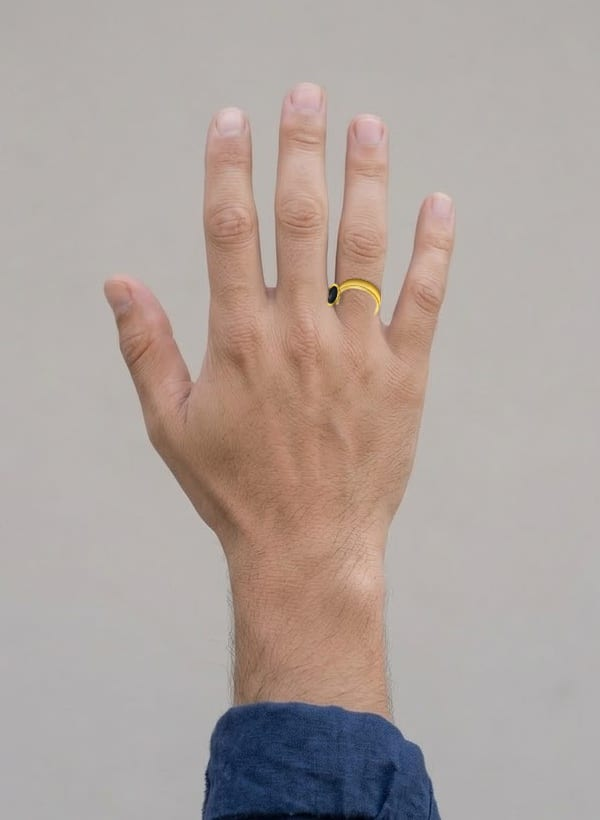
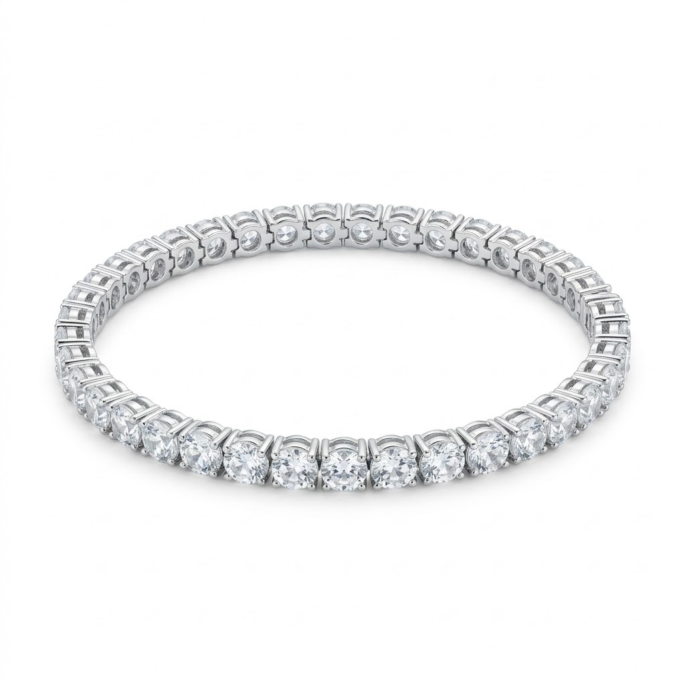
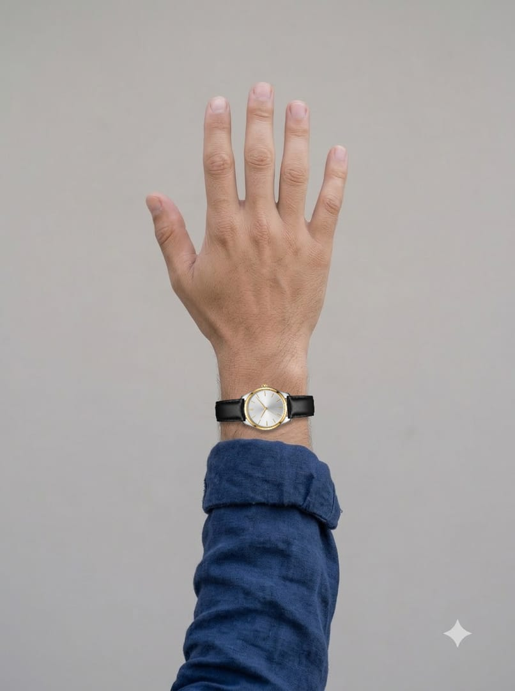

AI Facial Color Tones
Skin color → a low-weight undertone estimate that the recipient can correct.
20 unitsAI Face Attributes & Ratio
Face shape and proportions (5 features) → style rules for earrings and necklaces.
10 unitsEarrings VTO
On the selfie, ears visible

AI-generated modelNecklace VTO
On the selfie, neck in view

AI-generated modelRing VTO
On a back-of-hand photo

product photoBracelet VTO
On the same hand photo, wrist centred

AI-generated modelWatch VTO
On the same hand photo, dial upright